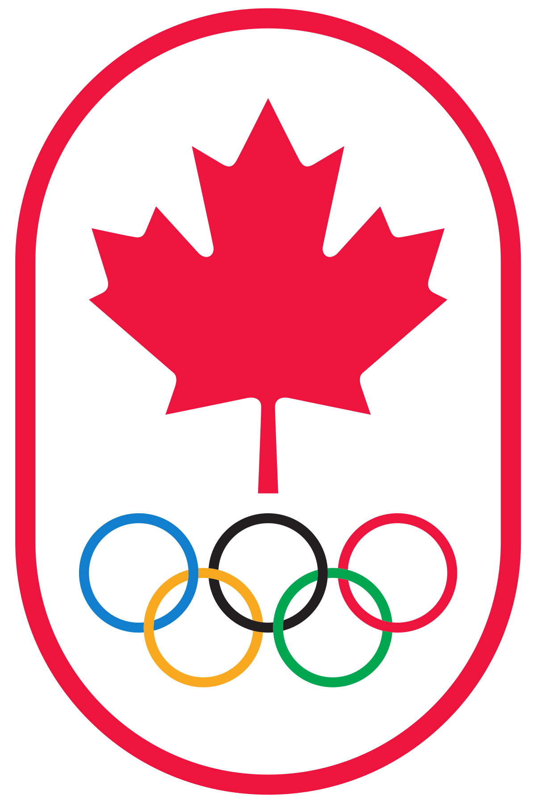

The Canadian Winter Olympics!
Statistics on the Canadian Winter Olympics
The Winter Olympic Games is a major international multi-sport event held once every four years for sports practiced on snow and ice. Canada has been represented in all 23 Winter Olympics and have a total of 625 medals! Let's see how Canada compares to other countries!
Gender Statistics in Canada
Out of the total 625 medals won by Canada, men have won 62% of them. Statistically, men win more Olympic medals due to women not being allowed to participate in the games.